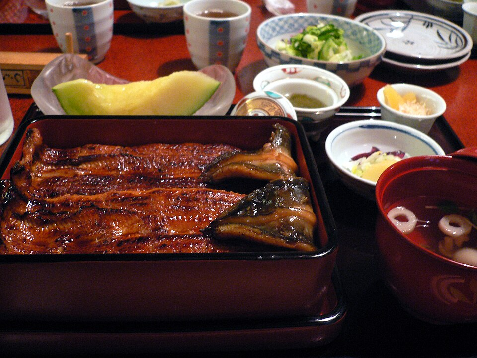

FUKUOKA · KITAKYUSHU
후쿠오카·기타큐슈 여행 일정
도시 간 이동과 관광 순서를 참고하는 일반 일정 예시야. 개인 숙소·항공편·실제 여행 날짜·인원 정보는 공개하지 않아.
Day 1 · 후쿠오카 도착·시내
시간대는 여행 전 확인
인천 → 후쿠오카 ·
국제선 도착 후. 입국·수하물 시간을 감안해 관광은 오후부터.
📍 Fukuoka Airport International Terminal📍 Incheon International Airport
시간대는 여행 전 확인
공항에서 숙소로
국제선에서 하카타역행 버스(6·7번 승강장, HEARTS는 11번) 또는 택시. 체크인 시각은 숙소 예약 정보를 확인.
시간대는 여행 전 확인
시간대는 여행 전 확인
Day 2 · 다자이후 방문
시간대는 여행 전 확인
하카타에서 다자이후로
하카타 버스터미널 직행버스가 편리(공식 안내 약 45분). 출발 시각은 당일 시간표 확인.
시간대는 여행 전 확인
다자이후 텐만구 · 참배길 · 규슈국립박물관
텐만구와 참배길을 먼저 둘러보고 박물관은 1–1.5시간 정도. 박물관 운영 시간과 입장 마감은 공식 안내 확인; 금요일 연장 개관은 특별전 기간에만 적용될 수 있어 사전 확인.
📍 Dazaifu Tenmangu📍 Dazaifu Tenmangu approach street📍 Kyushu National Museum
시간대는 여행 전 확인
시간대는 여행 전 확인
일행 합류 예정 ·
국제선에서 하카타역행 버스 이용 가능. 입국·짐 찾기·이동이 늦어지면 합류가 늦어질 수 있음.
시간대는 여행 전 확인
하카타역 주변에서 저녁 식사
식당 예약은 하지 않았어. 일행이 공항을 나온 뒤 도착 예상 시각을 확인하고 합류. 늦은 관광은 빼고 저녁 후 숙소로.
미확인: 일행 숙소·체크인 정보가 기록에 없어. 숙소 체크인 절차와 예약 인원은 예약 정보를 확인해줘.
Day 3 · 아침 기타큐슈로 이동
시간대는 여행 전 확인
후쿠오카 숙소 체크아웃
시간대는 여행 전 확인
하카타역 → 고쿠라역
산요 신칸센(열차별 약 15–20분대). 일행 좌석을 함께 예약하고 최신 출발시각 확인. 하카타 숙소에서 역까지 짐이 많으면 택시 고려.
시간대는 여행 전 확인
시간대는 여행 전 확인
모지코역 → 기타큐슈 숙소
숙소는 숙소 주변의 근사 핀만 확인돼 정확한 건물 핀은 미확정. 아래 Google Maps 경로에서 도보·대중교통을 각각 열고 실제 숙소 위치와 이동 시각을 확인해. 짐과 일행은 택시 2대 또는 탑승·짐 공간을 확인한 차량이 편할 수 있어.
시간대는 여행 전 확인
짐 두기 가능 · 체크인 시각은 숙소 예약 정보를 확인
호스트 안내상 13시 이후 객실 입구에 짐을 둘 수 있지만 객실 입실은 16시부터. 짐 둘 위치를 호스트 메시지로 재확인.
시간대는 여행 전 확인
시간대는 여행 전 확인
숙소 체크인 후 저녁
모지코 레트로에서 야키카레, 항구 산책. 전망실은 안내상 (입장 마감 21:30), 운영일 재확인. 숙소 침실은 2층이며 계단이 가파르니 아기·짐 이동 주의.
Day 4 · 기타큐슈 코스
시간대는 여행 전 확인
모지코에서 페리로 시모노세키 가라토시장
주말 바칸가이(초밥·해산물 행사)는 공식 영업 안내를 방문 전 확인해줘. 당일 영업점별 시간과 페리 운항은 출발 전 확인.
📍 Mojiko Ferry Terminal📍 Karato Ferry Terminal📍 Karato Market
시간대는 여행 전 확인
시장 브런치 후 모지코 복귀
주말 혼잡을 고려해 유모차는 접기 쉬운 것으로, 아기띠도 준비.
📍 Karato Market📍 Karato Ferry Terminal📍 Mojiko Ferry Terminal
시간대는 여행 전 확인
규슈철도기념관 또는 고쿠라성 일대
모지코에 머물면 철도기념관(운영 시간은 공식 안내 확인)과 레트로 거리. 고쿠라로 이동한다면 고쿠라성·정원·리버워크를 한 구역으로 묶고 둘 다 무리해 넣지 않기.
📍 Kyushu Railway History Museum📍 Kokura Castle📍 Kokura Garden📍 Riverwalk Kitakyushu
비나 피로가 있으면 모지코 레트로 실내·근거리 코스로 줄여. 차량 없는 일정이라 외곽 명소는 제외했어.
Day 5 · 후쿠오카 이동·귀국
시간대는 여행 전 확인
기타큐슈 숙소 체크아웃
체크아웃 후 숙소 짐 보관 불가.
시간대는 여행 전 확인
모지코 → 고쿠라 → 하카타 → 국제선 터미널
JR로 고쿠라, 신칸센으로 하카타. 국제선 출발 최소 3시간 전인 출발 3시간 전 공항 도착 목표. 하카타역행/공항행 직행버스 또는 지하철+국내선 무료 셔틀 이용(지하철은 국제선까지 직접 연결되지 않음).
📍 Mojiko Station📍 Kokura Station📍 Hakata Station📍 Fukuoka Airport International Terminal
시간대는 여행 전 확인
출발 전 확인
- 대중교통 운행 시각과 환승
- 관광지·시장·시설의 당일 운영 안내
- 유모차 이동 가능 구간과 아기띠 준비
이동별 대중교통
도시와 관광지의 Google Maps 핀은 이용할 수 있어. 개인 숙소의 정확한 위치와 출발 경로는 공개 자료에서 제외했어.
교통·운영 정보
- 후쿠오카공항 국제선 버스 · 국제선 6·7번 승강장 하카타역행
- 후쿠오카공항 지하철/무료 셔틀
- 다자이후 텐만구 공식 FAQ
- 규슈국립박물관
- JR 규슈철도기념관
- 가라토시장 공식 영업 캘린더
- 모지코 레트로 전망실
- 숙소 위치는 개인 정보 보호를 위해 공개하지 않아.
- Google Maps: 모지코역 → 택시 경로